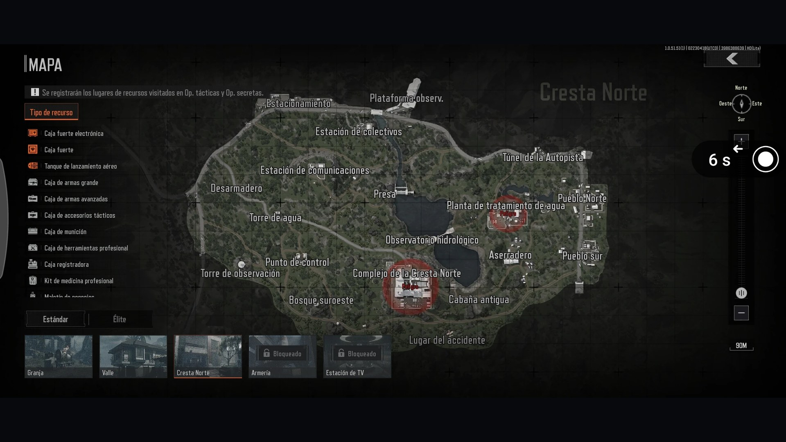

1. Vue d'ensemble
Northridge est le temple du jeu positionnel longue portée : crêtes, compose-dominating sightlines, hôtel fortifié de Fred — la carte idéale pour les snipers M24 et les H416 longue distance. En S7, le buff de portée effective favorise drastiquement ce théâtre.
2. Hotspots
- Northridge Hotel — Fred + squad, T4 gear, loot exceptionnel — intervention militaire en solo déconseillée.
- Radio Tower — ligne de vue sur trois axes, loot documents courant.
- Compound militaire — boîtes d'armes, coffre central.
- Sommet crin-de-fer — le point de power de la crête principale.
3. Route prudente (Forbidden entry)
- Spawn crête → 2. Tour radio → 3. Repérage : localiser les 4 zones de POI actives (audio + scope) avant d'avancer.
- Route « outskirts » : restez sur les franges, loot extérieur, évitez l'hôtel avant T+20.
- Extraction : Northridge North/South selon spawn — les extracteurs sont distants, planifiez.
Référence : ce qu'était le Secteur hostile
Le mode Secteur hostile a été introduit en Saison 6 et n'est plus accessible en Saison 7. Mais ses chiffres officiels restent la meilleure façon de comprendre l'économie PvE du jeu, et ils expliquent pourquoi Northridge est devenu la carte de farm préférée des joueurs solitaires.
| Carte | Rendement de butin | Combat entre équipes | Météo |
|---|---|---|---|
| Farm | Égal à une zone Lockdown | Les équipes ne peuvent pas s'infliger de dégâts | Nuit, brouillard, tempête |
| Northridge | Supérieur à une zone Lockdown | Les équipes ne peuvent pas s'infliger de dégâts | Nuit, blizzard |
| TV Station | Égal à une zone Forbidden | Le combat entre équipes est conservé | Conditions extrêmes |
Ces chiffres viennent de l'annonce officielle de la Saison 6, publiée par l'éditeur le 29 juin 2026. Trois conséquences en découlaient : Northridge offrait le meilleur rendement en PvE du jeu sans aucun risque de combat entre joueurs, Farm offrait le même rendement avec une rotation plus simple, et TV Station conservait le combat entre équipes tout en descendant au niveau de butin Forbidden.
Le mode ajoutait aussi quatre types de forces spéciales, aux comportements très différents : le briseur, le tireur d'élite, le grenadier et le fumigateur. Des boss étaient garantis sur Farm et Northridge, avec des chances de drop des clés universelles et de butin de forte valeur, et l'événement de ralliement de boss pouvait se déclencher sur les trois cartes.
Enfin, l'Infiltration solo proposait l'entrée en solo ou en équipe réduite sur Farm et Northridge, via des tickets trouvables en Tactical Ops, extractibles et échangeables sur le marché. C'est cette mécanique qui manquait au jeu depuis longtemps : la possibilité d'apprendre une carte sans être lecture par une équipe adverse.
4. Le PvE en S7 : ce qui a changé
Hostile Sector n'est plus disponible
Depuis la Saison 7, Hostile Sector et Distorted Valley ne sont plus accessibles. L'annonce officielle de la saison est explicite : les tickets Hostile Sector : Solo Infiltration restants peuvent être vendus à un contact. Ne planifiez donc plus aucun run Farm ou Northridge « solo » sur cette file. Officiel
Ce que la redirection donne concrètement sur Northridge :
- Les quatre classes d'élite sont revenues dans le mode principal — breacher, sniper, grenadier et fumigator. Elles sont déployées sur les cartes de Tactical Ops, mais avec un niveau de menace global plus faible quen's Hostile Sector : comptez des escouades d'élites plus légères, pas l'ancienne expérience PvE. Officiel
- Le vrai PvE de la saison est Zombie Endless — un mode survival sur l'Airport, en escouade de 1 à 4, avec loadout imposé et downed permanent. C'est aujourd'hui le seul mode où aucun opérateur adverse ne peut vous tuer. Voir le guide des modes PvE.
- Le red drop Chaotic Matter est devenu global : jusque-là réservé à Distorted Valley, il apparaît maintenant sur toutes les cartes en S7. Si vous le cherchiez uniquement sur Valley, la bonne nouvelle est que Northridge peut désormais en produire. Officiel
Le substitut pour farmer sans PvP
Si votre but est la Koen sans risquer votre stuff, la chaîne qui remplace Hostile Sector est : Zombie Endless (PvE pur, Airport) pour la routine, et Secure Ops si vous voulez arena mais garder votre équipement. Le PvE « found money » classique n'existe plus en S7 : les seules files PvP sans escouade restent les files classiques de Tactical Ops, où vous pouvez croiser une équipe.
5. Fred, le boss de la crête
Fred tient le Northridge Hotel avec son squad : T4 helmet + armor constants, weapons variés. Éliminez les gardes à distance (DMR/M110), puis Fred en dernier. Jamais de porte-à-porte — c'est sa maison.
Fred, le boss de Northridge — ce que dit l'éditeur
La distinction entre ce que l'éditeur a dit et ce que la communauté rapporte compte. Le tableau ci-dessous s'appuie sur la revue exhaustive des 483 publications de MoreFun Studios menée au 1er novembre 2026 : chaque nom de boss vient d'une publication officielle datée.
| Nom | Statut | Ce que l'éditeur en dit |
|---|---|---|
| Fred | Nommé boss par l'éditeur | Tient l'hôtel Northridge avec une escouade depuis l'arrivée de la carte (27 avril 2025). MoreFun le décrit comme le boss principal de la carte, avec un armement varié et un casque et une armure T4. Apparaît à l'hôtel, au Campus Services ou à la Cable Car Station. Son jeton est l'« Frade's Wedding Ring ». |
Le boss melee anonyme
En janvier 2026, un événement de Combat Melee-Only sur Northridge a fait apparaître au centre de la piscine un boss non nommé. Remarque : l'éditeur ne l'a jamais appelé, et il lâche systématiquement une Keycard Chain universelle. Vous le reconnaissez à son arme melee — pas à un nom.
Zones officielles
Libellés relevés sur la carte officielle du jeu : ces noms sont ceux affichés en jeu et repris par les codes-cle.
- Cable Car Station — Nombreux conteneurs de loot, Point d'extraction
- Parking Lot — Loot libre, Plusieurs scavengers
- Communication Station — Nombreux conteneurs de loot, Plusieurs coffres-forts
- NW Woodland — Loot libre
- West Building — Nombreux conteneurs de loot, Zones de bureaux
- Service Room — Coffre-fort, Nombreux conteneurs de loot
- Access Bridge — Point d'extraction, Postes de sniper
- Radio Room — Nombreux conteneurs de loot
- Barracks — Nombreux conteneurs de loot, Lits
- Testing Station — Coffre-fort, Nombreux conteneurs de loot
- Observation Station — Plusieurs coffres-forts, Loot premium
- Schoolhouse — Nombreux conteneurs de loot
- SW Camp — Loot libre
- NW Campsite — Loot libre
- Observation Dock — Point d'extraction, Postes de sniper
- Stray Site — Spawn de loot rare
Points d'extraction officiels
Liste exhaustive des sorties de la carte (noms de jeu). Les extractions vertes sont fixes ; les autres dépendent d'un vehicule, d'un abonnement ou d'une zone Nanotech.
- Dam Sluice Gate
- Access Bridge
- Lifeboat
- Armored Vehicle
- Eastern Bridge
- Village End
- Path to Onotos Mountains
- Bus Terminal
- Sawmill
- Lakeside Boardwalk
- Star Observation Deck
Clés de la carte
Chaque clé s'use à l'usage : 1 point en Normal, 2 en Lockdown, 3 en Forbidden. Une clé à 45 de durabilité tient donc beaucoup moins longtemps en Forbidden.
| Clé | Durabilité | Débloque |
|---|---|---|
| Cafeteria Cashiers Office Key | 3 | non documenté |
| Building C Lounge 1 Key | 30 | non documenté |
| Building B Managers Office Key | 45 | non documenté |
| Service Area Managers Office Key | 30 | non documenté |
| Building D Projection Room Key | 45 | non documenté |
| Sewage Plant Workshop Key | 45 | non documenté |
| Building C Lounge Private Room Key | 30 | non documenté |
| Building B Reception Room Key | 30 | non documenté |
| Waiting Area Lounge Key | 45 | non documenté |
Les clés marquées non documenté sont bien présentes sur la carte et leur durabilité est vérifiée, mais le wiki officiel ne documente pas encore les conteneurs qu'elles ouvrent. Considérez-les comme des accès à une zone précise plutôt que comme des clés de loot garanti.
Boss de la carte
Frade Lee — spawn parmi les points d'intérêt : approchez avec une armure T3 minimum et surveillez le tour de garde.
Cartes interactives
Cartes de référence
Deux ressources de référence pour aller plus loin que cette page :
- ABIBuilder — catalogue des cartes (nouvel onglet) : spawns, clés et stats de loot par carte.
- TCNO — carte interactive de Northridge (nouvel onglet) : survol des zones, marqueurs d'extraction et de loot.